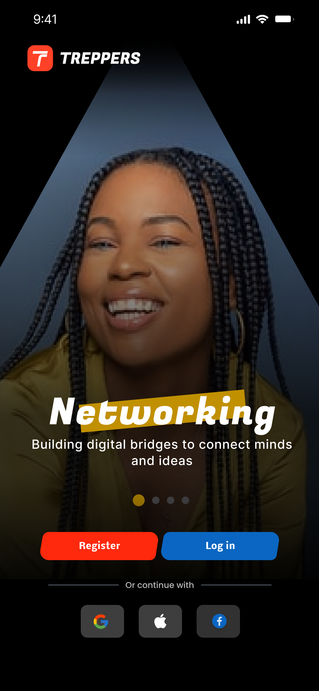
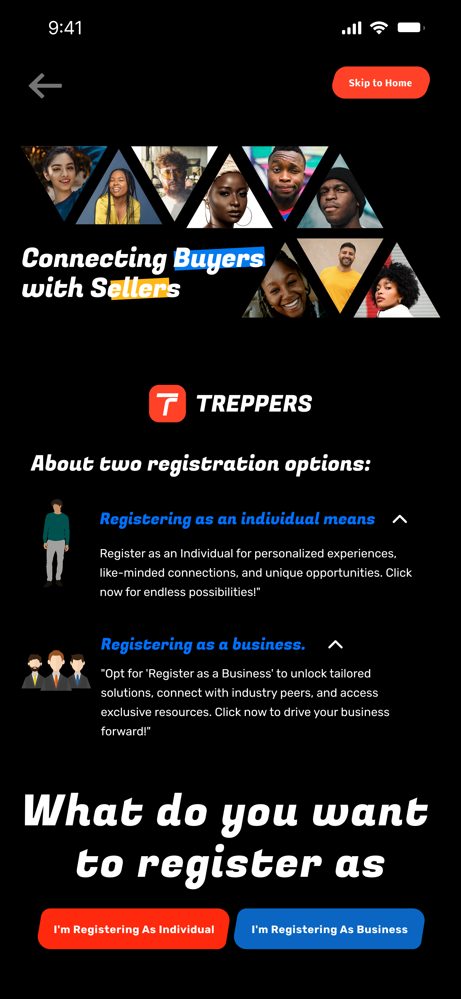
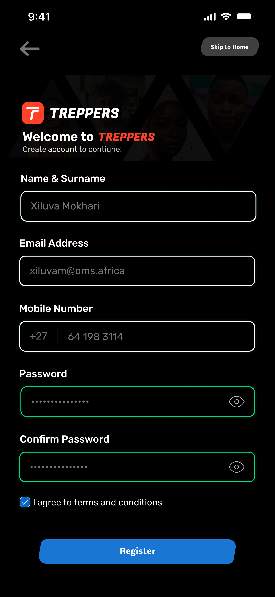
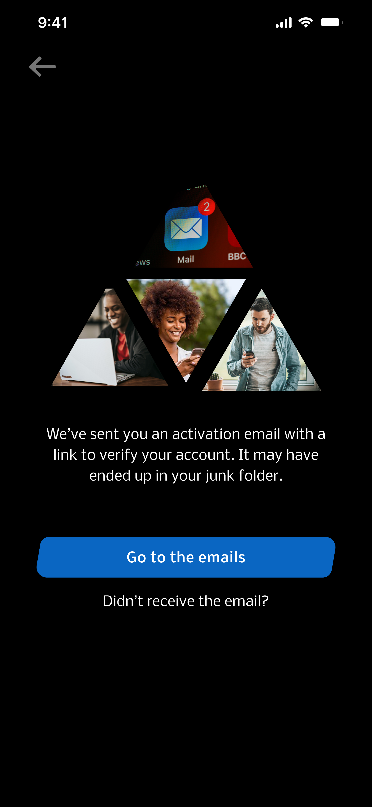
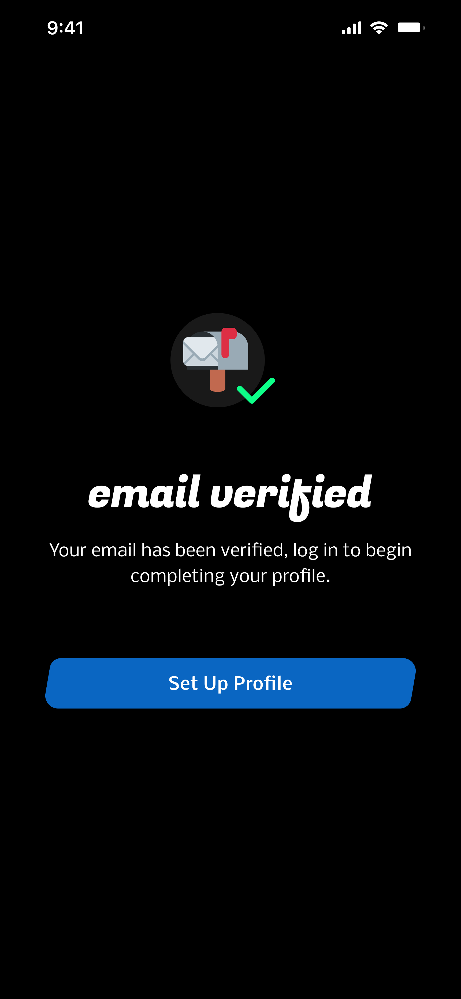
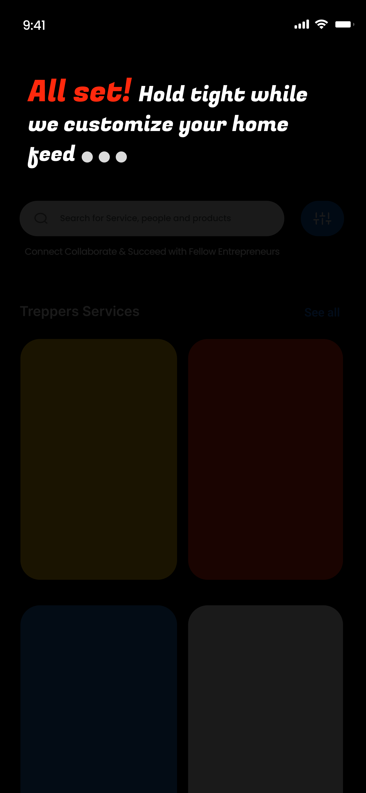
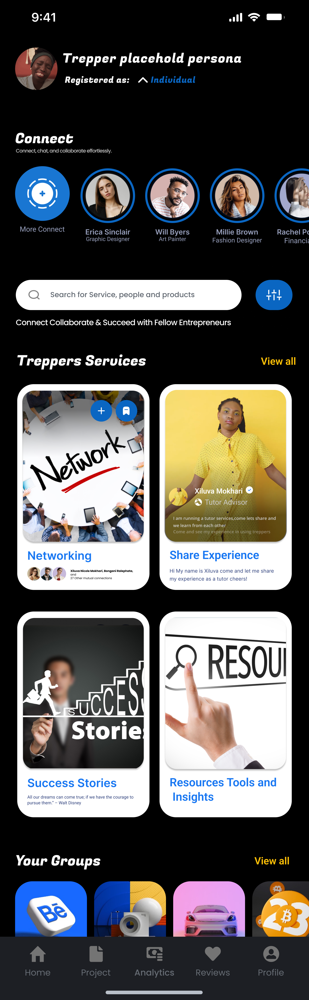

Treppers
Treppers is a mobile-first community platform that connects entrepreneurs with products, services, and each other in one place.
01 — Project Overview
Treppers is a community-based platform designed to connect entrepreneurs, service providers, and product seekers in one ecosystem. The goal was to create a space where users could easily discover, offer, and request services or products while building meaningful professional connections.
This project was an internal initiative, and I was responsible for the entire UI/UX process — from early research and ideation to final high-fidelity designs. Although the product is not live, it was designed with real-world scalability and usability in mind.
Entrepreneurs often struggle with:
Existing platforms tend to focus on either marketplaces or communities rarely both resulting in fragmented experiences. Design a platform that: Combines community + marketplace into a single experience Makes it easy to discover services and products Encourages collaboration and trust among entrepreneurs Feels simple, intuitive, and welcoming for first-time users Since this was an internal project, I conducted light but focused research, including:
I focused on keeping navigation simple and predictable: The structure was designed to minimize cognitive load and help users reach their goal in as few steps as possible.        The final design delivered:02 — The Problem
03 — The Goal
04 — Research Methods
Key Insights
06 — Personas
Primary Persona: The Entrepreneur
Secondary Persona: The Service Provider
07 — Information Architecture
Core Sections:
09 — Final UI Screens
Interactive Prototype
11 — Final Outcome
Impact Delivered
Even though Treppers is not live, the project demonstrates my ability to:
12 — Challenges & Learnings
Challenges
Learnings